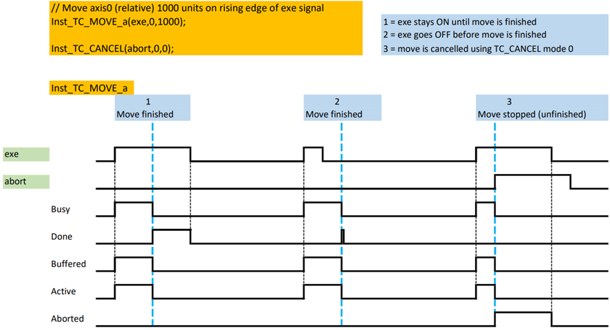
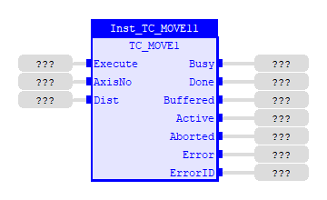
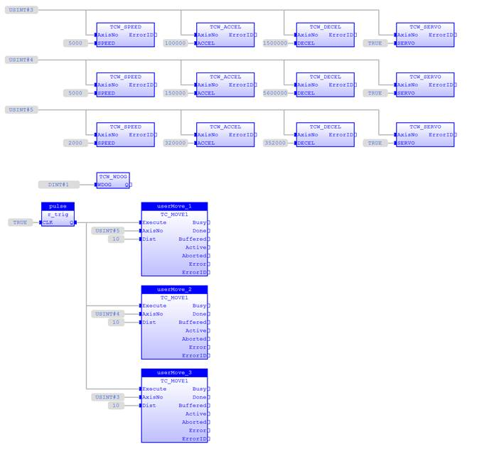
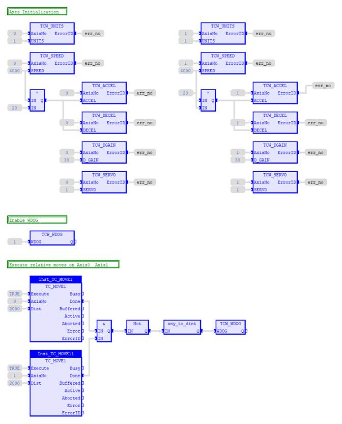
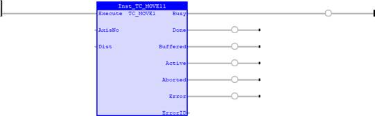
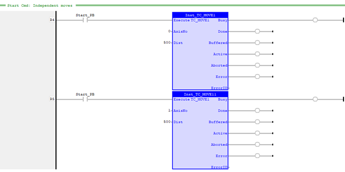
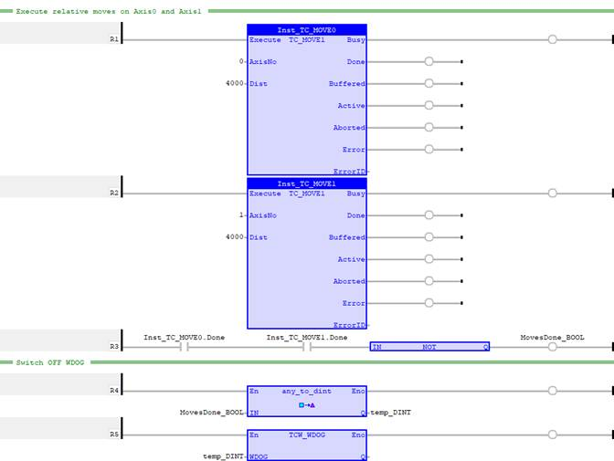

Motion Function
Issues a new MOVE(Dist) motion request for the axis specified by 'AxisNo'.
|
Execute : BOOL; |
Rising edge requests execution |
|
AxisNo : USINT; |
Axis number of base axis |
|
Dist : LREAL; |
The distance to be moved |
|
Busy : BOOL; |
TRUE if function is running |
|
Done : BOOL; |
TRUE when function has completed normally |
|
Buffered : BOOL; |
TRUE when motion command is in NTYPE buffer |
|
Active : BOOL; |
TRUE when motion command is in MTYPE buffer |
|
Aborted : BOOL; |
TRUE if function terminates due to CANCEL |
|
Error : BOOL; |
TRUE if a program error is detected |
|
ErrorID : UINT; |
Returned error number |
When the execute input changes from FALSE to TRUE (rising edge), the function block attempts to load the motion command into the required axis buffer. If the buffer is unavailable, the function re-tries on each PLC scan. Once the motion command has been loaded, the appropriate outputs will indicate the state of the motion; in NTYPE, MTYPE, aborted (Cancelled) or done.
A programming error, such as parameter out of range, will set the Error output and return an error ID number. For the Error ID reference, see the Trio Programming error list.
The function must be in the processing scan and the Execute input TRUE for the outputs to correctly show the status of the move.
The execution timing diagrams for TC_MOVE(1/2/3) of one axis, both in an uninterrupted situation and when it is aborted by TC_CANCEL during move, are shown below. The first timing diagram describes the sequence of one TC_MOVE instance. The second is with 2 TC_MOVE instances.

Execution timing diagram of one TC_MOVE instance
Execution timing diagram of two TC_MOVE instances
Inst_TC_Move1( Execute (*BOOL*) , AxisNo (*USINT*) , Dist (*LREAL*) );
Axis0 and axis1 are first set up for initial configuration. Once that done, switch WDOG ON by using the command TCW_WDOG. Move both axis 1000 units relative to current position.
// Axis 0 & 1 setup
FOR
i:=
0
TO
1
DO
TCW_UNITS
(i,
1
); // Set UNITS
TCW_SPEED
(i,
4000
); // Set SPEED
TCW_ACCEL
(i,
20
*TCR_SPEED
(i));
// Set ACCEL
TCW_DECEL
(i,
TCR_ACCEL
(i)); // Set DECEL
TCW_DGAIN
(i,
30
); // Set D_GAIN
TCW_SERVO
(i,
TRUE
); // Switch on SERVO
END_FOR
;
// Switch on WDOG
TCW_WDOG
(
1
);
// Move axis0 and axis1 (relative) 1000 units
Inst_TC_MOVE1_0(
TRUE
,
0
,
1000
);
Inst_TC_MOVE1_1(
TRUE
,
1
,
1000
);

Axes 3, 4 and 5 are to move independently (without interpolation). Each axis will move at its own programmed SPEED, ACCEL and DECEL etc.

Program starts with initialisation on axes parameters. Once that is set, WDOG is switched ON before continuing with axes moves.


Axis 0 and 1 are to move independently (without interpolation).

The subprogram below executes a relative move of distance 4000 units on each axis. Once both moves are done, WDOG is switched OFF.

TC_MOVE2 , TC_MOVE3 , TrioBASIC Errors